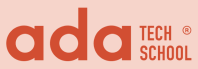

Bienvenu.e.s dans notre page "À propos"
Présentation du projet et de notre équipe
Ce site a été créé dans un but pédagogique dans le cadre d'un exercice de groupe de l'école ADA TECH SCHOOL. Le projet avait pour objectif de développer une application web qui permette de visualiser des données de façon dynamique en utilisant une API.
Pour cela nous avons choisi l'API "Répertoire des musées de france" de la base Muséofile, dans la Open Data University de l'association LATITUDES.
Un des enjeux de l'exercice consistait à amorcer une démarche d'éco-conception en questionnant nos choix fonctionnels et techniques, ainsi que de respecter les critères essentiels du Référentiel d'amélioration de l'accessibilité (RGAA).
üèÅ Un des enjeux de l'exercice consistait √† amorcer une d√©marche d'√©co-conception en questionnant nos choix fonctionnels et techniques, ainsi que de respecter les crit√®res essentiels du R√©f√©rentiel d'am√©lioration de l'accessibilit√© (RGAA).
Ahmed Ayari, Edwige Saves, Eva Tharrats et Guilherme Ye Fernandes
Formation "Développeur.euse Full-Stack" chez Ada Tech School - campus Paris.


- Ahmed : VitryAhmed
- Edwige : Edwige08
- Eva : EvaTP
- Guilherme : GGui26
Merci pour votre visite !
Crédit photos : Pixabay, Pexels. Visuels réalisés avec Canva.